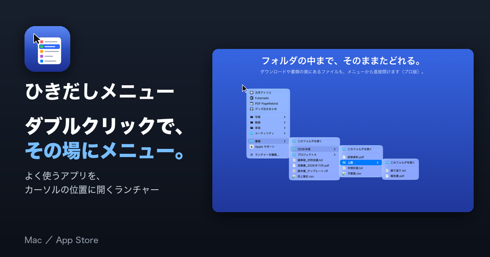

ひきだしメニュー

ひきだしメニューは、よく使うアプリ・書類・フォルダ・Web ページを、マウスのカーソルの位置に開くメニューからすぐに起動できる Mac 用のランチャーです。分類（サブメニュー）で整理でき、登録したフォルダは中のファイルや子フォルダをメニューでたどって開けます。
はじめに
- 起動すると、画面右上のメニューバーにアイコンが表示されます。
- メニューの一番下の「ランチャーを編集…」で編集画面を開き、「アプリを追加…」から登録したいアプリを選びます。Finder からアプリや書類をドラッグしても登録できます。
- デスクトップの何もない所をダブルクリックすると、その場所にメニューが開きます。キーボードの option＋スペースや、メニューバーのアイコンからも開けます。
開き方は編集画面の「ランチャーの開き方」で変えられます。
プロ版について
基本の機能は無料でお使いいただけます。プロ版（買い切り）を購入すると、次の機能が使えるようになります。
- フォルダの中身をメニューでたどって開く（ダウンロード・書類など）
- Web ページの登録（サイトのアイコン付き）
- アプリの名前が変わる更新のあと、新しい版への差し替えを提案
- 今後追加する機能
購入は編集画面の「プロ版」の欄から行えます。同じ Apple アカウントの Mac では、「購入を復元」でいつでもプロ版の機能を使えるようにできます。
よくある質問
- Q. デスクトップをダブルクリックしてもメニューが開きません
- A. ウインドウの無い場所（壁紙が見えている所）でダブルクリックしてください。Dock やメニューバーの上では開きません。また、デスクトップに置いた書類やフォルダのアイコンをダブルクリックしたときは、その書類が開くだけでメニューは出ません。
- Q. デスクトップをクリックすると、ウインドウが画面の端に下がってしまいます
- A. macOS のステージマネージャの動きです。ステージマネージャがオンのあいだは、壁紙をクリックするとウインドウが出入りします。気になる場合は、編集画面の「ステージマネージャの設定を開く…」からシステム設定を開き、オフにしてください。キーボードの option＋スペースで開く方法もあります。
- Q. メニューの項目に「？」の印が付き、「見つかりません」と表示されます
- A. 登録したアプリや書類が、移動または削除された状態です。アプリの更新で名前が変わった場合（例：「〇〇 2026」から「〇〇 2027」）、プロ版では新しい版を探して差し替えを提案します。編集画面で項目を削除し、登録し直すこともできます。
- Q. Mac にログインしたときに自動で起動できますか？
- A. 編集画面の「Mac にログインしたら自動で起動する」にチェックを付けてください。
- Q. 別の Mac でもプロ版を使えますか？
- A. 同じ Apple アカウントでサインインしている Mac なら、編集画面の「購入を復元」を押すとプロ版の機能が使えるようになります。追加の支払いはありません。
お問い合わせ
不具合のご報告・ご要望は、以下のメールアドレスまでお気軽にご連絡ください。
emc.hs07@gmail.com
プライバシーポリシー
 文字アトリエ
文字アトリエ PDF PageRebind
PDF PageRebind Futamado
Futamado CellStay
CellStay PhotoParcel
PhotoParcel PhotoParcel Select
PhotoParcel Select チャプたん
チャプたん チャプたんブックマーク
チャプたんブックマーク MIDIアトリエ
MIDIアトリエ 事務電卓
事務電卓 Tecola
Tecola グッズ注文まとめ
グッズ注文まとめ